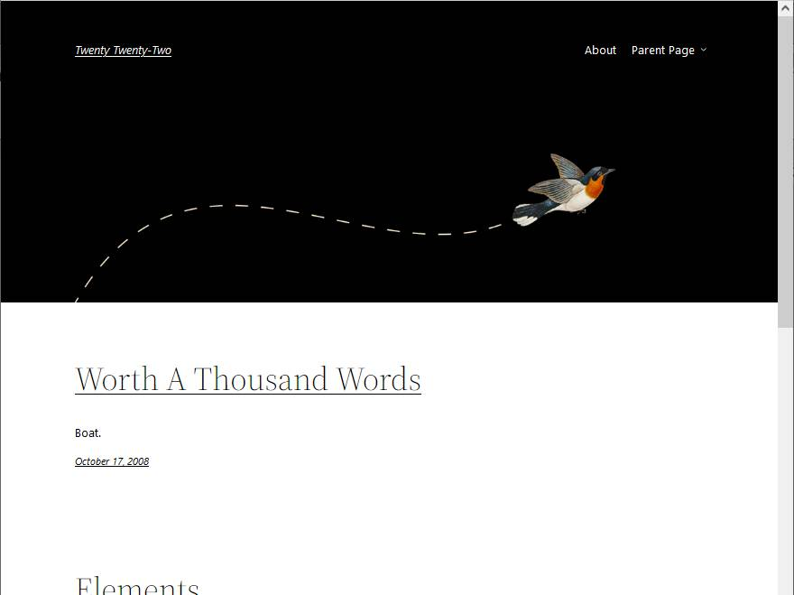

Twenty Twenty-One (2021)
Información sobre Twenty Twenty-One: Preview - Manual de WordPress - Directorio de temas - Changelog.

WordPress ha incluido siempre un tema predeterminado. Desde 2010, más o menos al final de cada año, se publica un nuevo tema predeterminado que se llama como el año siguiente. El único año en que no se publicó un nuevo tema fue en 2018, por motivos que desconozco pero que probablemente tenían que ver con el estado de desarrollo del nuevo editor visual Gutenberg, finalmente introducido en WordPress 5.0 (diciembre de 2018).
Cuando se instala WordPress por primera vez, se instala con el tema anual más reciente disponible. Cuando se publica una nueva versión de WordPress y WordPress se actualiza automáticamente, el tema elegido por el usuario se mantiene aunque se haya publicado un nuevo tema anual. En cualquier momento, el administrador puede puede cambiar el tema empleado a cualquier tema anual anterior o posterior disponible.
Referencia: Historia de los temas predeterminados de WordPress (2016)
Información sobre Twenty Twenty-Two: Preview - Manual de WordPress - Directorio de temas - Changelog.

Información sobre Twenty Twenty-One: Preview - Manual de WordPress - Directorio de temas - Changelog.
Información sobre Twenty Twenty: Preview - Manual de WordPress - Directorio de temas - Changelog.

Información sobre Twenty Nineteen: Preview - Manual de WordPress - Directorio de temas - Changelog.

Información sobre Twenty Seventeen: Preview - Manual de WordPress - Directorio de temas - Changelog.

Información sobre Twenty Sixteen: Preview - Manual de WordPress - Directorio de temas - Changelog.
Información sobre Twenty Fifteen: Preview - Manual de WordPress - Directorio de temas - Changelog.

Información sobre Twenty Fourteen: Preview - Manual de WordPress - Directorio de temas - Changelog.

Información sobre Twenty Thirteen: Preview - Manual de WordPress - Directorio de temas - Changelog.
Información sobre Twenty Twelve: Preview - Manual de WordPress - Directorio de temas - Changelog.

Información sobre Twenty Eleven: Preview - Manual de WordPress - Directorio de temas - Changelog.

Información sobre Twenty Ten: Preview - Manual de WordPress - Directorio de temas - Changelog.
Este tema no se actualiza desde el año 2010, por lo que no se recomienda su uso.
Información sobre Default: Preview - Directorio de temas.
Este tema no se actualiza desde el año 2010, por lo que no se recomienda su uso.
Información sobre Classic: Preview - Directorio de temas.